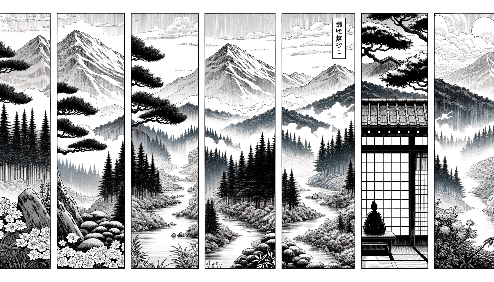

七十五巻 巻一覧
正法眼藏第68 大修行
本ページは各巻の紹介ページです。tools/gen_web_volumes.py が doc/正法眼蔵.txt から要点の短い抜粋を載せています（全文の引用ではありません）。
出典（原文）: https://shomonji.or.jp/zazen/doc/genzou.html
原文・現代語訳の全文は 全文ページを参照してください。
この巻の紹介（概要）
道元『正法眼蔵』七十五巻の第68篇「大修行」です。禅籍・経典への引用や語の行間が重なりやすいので、一度ですべてを要約に還元しない読み方を推奨します。問答 Bot では巻スコープにこの題名を含めると応答が安定しやすいことがあります。
語彙の足場
- 題名語：巻題「大修行」は、道元が本章で特に扱う論点の看板です。辞書義だけに固定せず、原文中の用例で意味を確かめます。
- 引用と典故：公案・経文の引用は、一字一句の照応（何に答えているか）を押さえると全体が見えやすくなります。
- 学び方：抜粋だけでも音読し、分からない箇所は印を付けて後から問うとよいです。
原文（要点の抜粋）
当巻の冒頭付近からの短い抜粋です。長い引用は載せていません。全文は全文ページを参照してください。出典はリポジトリ内 doc/正法眼蔵.txt です。原文の参照元: https://shomonji.or.jp/zazen/doc/genzou.html
洪州百丈山大智禪師［嗣馬祖、諱懷海］、凡參次、有一老人、常隨衆聽法。大衆若退、老人亦退。忽一日不退（洪州百丈山大智禪師［馬祖に嗣す、諱は懷海］、凡そ參次に一りの老人有つて、常に衆に隨つて聽法す。大衆若し退すれば老人もまた退す。忽ちに一日退せず）。
師遂問、面前立者、復是何人（師遂に問ふ、面前に立せる者、復た是れ何人ぞ）。
老人對云、某甲是非人也、於過去迦葉佛時、曾住此山。因學人問、大修行底人、還落因果也無。某甲答他云、不落因果。後五百生、墮野狐身。今請和尚代一轉語、貴脱野狐身（老人對して云く、某甲は是れ非人也。過去迦葉佛の時に、曾て此の山に住せり。因みに學人問ふ、大修行底の人、還た因果に落つや無や。某甲他に答へて云く、因果に落ちず。後五百生まで、野狐の身に墮す。今請すらくは和尚、一轉語を代すべし。貴すらくは野狐の身を脱れんことを）。
遂問云、大修行底人、還落因果也無（大修行底の人、還た因果に落つや無や）。
師云、不昧因果（因果に昧からず）。
老人於言下大悟。作禮云、某甲已脱野狐身、住在山後。敢告和尚、乞依亡僧事例（老人言下に大悟す。禮を作して云く、某甲已に野狐身を脱れぬ、山後に住在せらん。敢告すらくは和尚、乞ふ亡僧の事例に依らんことを）。
師令維那白槌告衆云、食後送亡僧（師、維那に令して白槌して衆に告して云く、食後に亡僧を送るべし）。
大衆言議、一衆皆安、涅槃堂又無病人、何故如是（大衆言議す、一衆皆安なり、涅槃堂に又病人無し、何が故ぞ是の如くなる）。
食後只見、師領衆至山後岩下、以杖指出一死野狐。乃依法火葬（食後に只見る、師、衆を領して山後の岩下に至り、杖を以て一つの死野狐を指出するを。乃ち法に依つて火葬す）。
師至晩上堂、擧前因緣（師、至晩に上堂して、前の因緣を擧す）。
黄檗便問、古人錯對一轉語、墮五百生野狐身。轉轉不錯、合作箇什麼（黄檗便ち問ふ、古人の一轉語を錯對する、五百生野狐の身に墮す。轉轉錯らざらん、箇の什麼にか作る合き）。
師云、近前來、與儞道（近前來、儞が與に道はん）。
図解（4コマ・AI生成）
教義の根拠は原文・出典に従い、漫画は比喩の補助に留めてください。

深掘り（読解のコツ）
- 道元文は定義の羅列に見えても、多くの場合誤解への遮断と正伝の姿勢が背骨になっています。
- 「当体」「現成」「即」などの語が出たら、その巻独自の差別相にどう接続しているかをメモしておくとよいです。